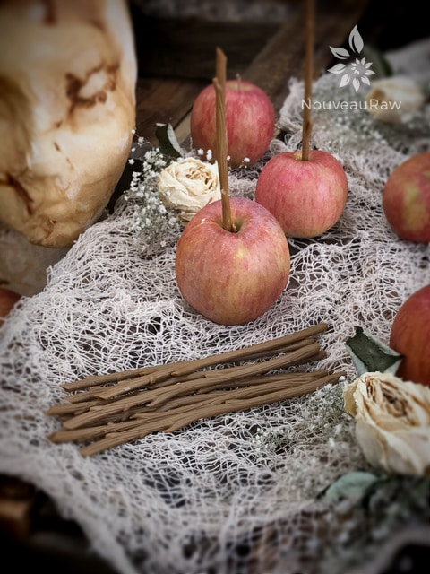
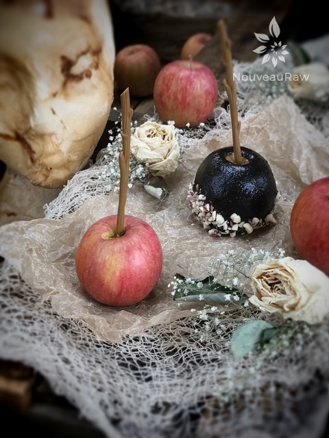
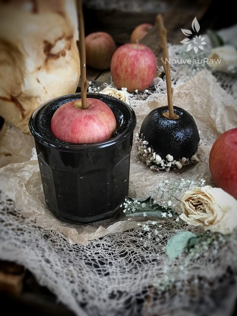
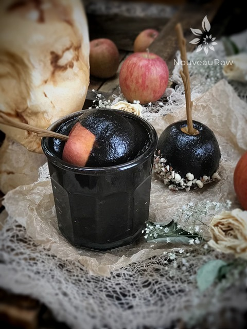
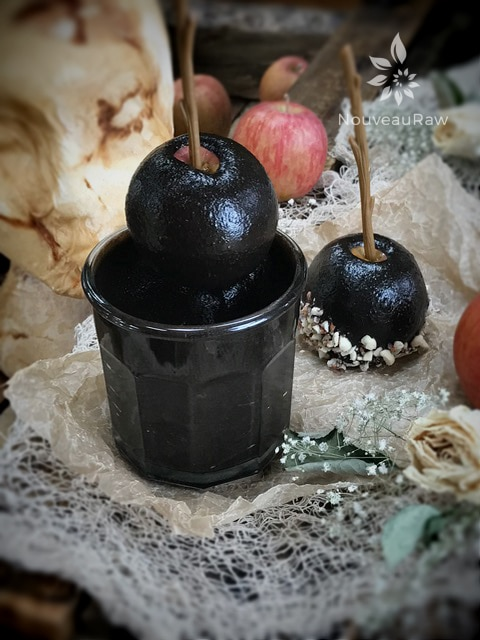

Black “Candied” Apples | Raw, Vegan, Gluten-free, Nut-free

These Black “Candied” Apples are perfect for Halloween. They are deliciously freaky looking, yet so elegantly beautiful.
There is a secret ingredient that I used which gives them their blacker than the ace of spades color. But I am not going to dive into that just yet. First, off… standard black candied apples are made from pure sugar, corn syrup (more sugar) and black dye.
The synthetic black dye is obtained by combining FD&C red 40, FD&C blue 1, FD&C yellow 5, phosphoric acid, water, and sodium benzoate.
Red 40 is a certified color that comes from petroleum distillates or coal tars. It has been shown to cause hyperactivity in children and experts also suspect it to be cancer causing. You can read more about (here).
FD&C Blue 1 is made from a coal tar derivative and is usually a disodium salt. It has the capacity for inducing allergic reactions in individuals with pre-existing moderate asthma. Animal studies indicate that it can cause tumors and be carcinogenic to certain organs. (source)
Before we go any further, just what in tarnation is coal tar?I had to look it up… www.dictionary.reference.com refers to coal tar as `a thick, black, viscid liquid formed during the distillation of coal, that upon further distillation yields compounds, as benzene, anthracene, and phenol, from which are derived a large number of dyes, drugs and other synthetic compounds, and that yields a final residuum (coal-tar pitch), which is used chiefly in making pavements.`And this is approved for consumption?
FD&C Yellow 5 is also known as Tartrazine, which is also derived from… coal tar. According to an article, I read from Natural News it reads, “Time and time again, tartrazine has been proven to cause many different side-effects and allergic reactions in people. These can include: anxiety, migraines, asthma attacks, blurred vision, eczema, other skin rashes, thyroid cancer, Eosinophilia (increase in specific forms of white blood cells), clinical depression, ADHD or hyperactivity, hives, permanent DNA damage, heart palpitations, rhinitis, sleep disturbances/insomnia, general all-over weakness, hot flushes and OCD (obsessive-compulsive disorder).”
Let’s stop there… it makes me sick to my tummy just reading about what goes into food these days. And it makes even more thrilled with the outcome of this recipe where I didn’t have to use any artificial dyes or coal tar! So where does this midnight black color come from… black tahini butter! Most of us are familiar with the tan tahini butter… so what’s the difference? The tan color butter comes from the white/cream-colored sesame seeds, and the black color butter comes from…. yep, you guessed it… black sesame seeds.
If you love tahini, you will love these “candied” apples. If you don’t, then it’s a good time to try my everyday raw caramel apples. Once dipped, you will set them in the fridge for the outer covering to firm up a tad, but they won’t get glossy hard. And thank goodness for that. I for one want to keep my teeth right where they are. Hehe, I hope you enjoy this recipe. Please comment below and have a blessed day, amie sue
Yields 1 1/2 cups
Topping Idea:
- shredded coconut
- crushed nuts or seeds.
Preparation:
- Place the black tahini butter, sweetener, date paste, vanilla and salt in a high-powered blender and process until smooth.
- Stop occasionally to scrape the sides down.
- Pour the batter into a glass that is just a little bit larger than the apples that you are using.
- I recommend using small apples because the batter is rich and no need to overindulge.
- If you want to put some topping on them, have it ready. Be sure to crush whatever you use in small pieces.
- Wash and dry the apples. Make sure they are really dry, the mixture won’t stick well if there are wet spots on the apples.
- Remove the stem and poke a stick in the center.
- Be sure to really push it in there nice and snug, so it doesn’t slip out while you are coating the apple.
- Holding onto the stick, press the apple down into the glass halfway. Turn the apple to the side and twist it in the batter, making sure to evenly coat the apple.
- Straight back up and lift it straight out. Wipe some of the excess batter off along on the rim of the glass.
- Set the apple in the crushed topping and gently roll it around, so the nuts/seeds stick to the batter.
- Place on parchment paper and set in the fridge for a few hours to set up.
- The exterior won’t harden to the touch.
- Store in the fridge in a glass container for 3-5 days.

Poke sticks into the apple core. Go deep enough, so the apple is on there tight.

These are plastic sticks I picked up at Michael’s Craft store, but popcycle sticks work too.

Pour the “candied” mixture into a jar, making sure the largest apple fits in it for dunking.

Once the apple is 1/2 way submerged, tilt sideways and roll.

Take is slow and easy. Let it drip a little and wipe the excess off on the rim of the glass.
© AmieSue.com